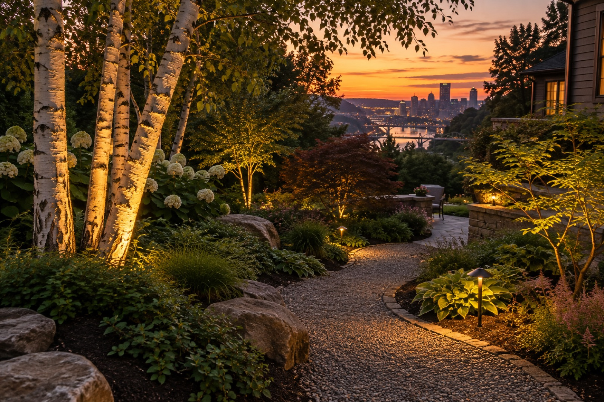
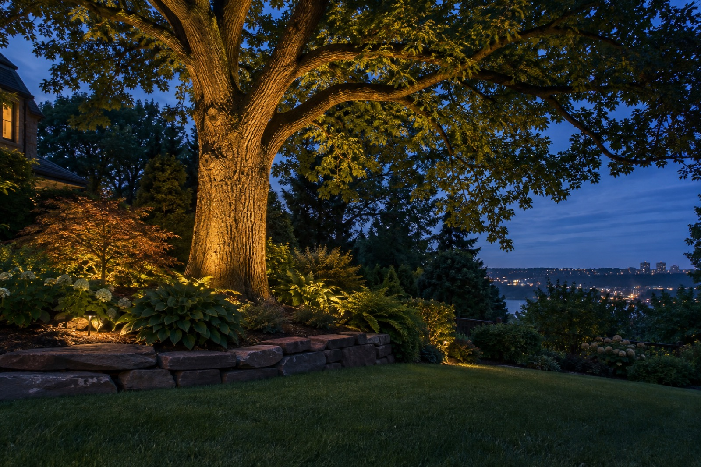

Tree Uplighting for Pittsburgh-area homes
Mature trees are part of the character of many Pittsburgh properties. Lighting can reveal trunk texture, branching, and canopy without making the yard uniformly bright.
Every property and project is different. Our conversation begins with what you want to see, how you use the space, and which parts of the home or landscape deserve attention after dark.

Choose the view first
A tree can read differently from the street, patio, and living-room window. The design starts with the viewpoint that matters most and the role the tree plays in the whole scene.
Consider species and shape
An oak canopy, a birch grove, and a small Japanese maple need different approaches. Branching, foliage density, and height affect the beam and fixture position.
Plan for growth and seasons
Trees change. Aiming may need adjustment as branches expand, while winter can reveal an entirely different silhouette.
The best lighting gives every evening a more considered point of view.
What a first conversation can cover
- The spaces you want to use, highlight, or navigate after sunset
- How the lighting should look from the street and from inside the home
- Whether an existing system is present and what you would like to change
- Your location in the Pittsburgh area and the next practical step


Common questions
Can one fixture light a large tree?
It depends on the size and desired effect. A large canopy may need a more layered approach.
Will the fixture be visible in daytime?
Placement can make a fixture visually quiet, though exact options depend on the planting bed.
Can tree lights work with path lights?
Yes. The two can create foreground and background layers when designed together.
See more ideas in the Pittsburgh landscape lighting guide, or tell us about your property.